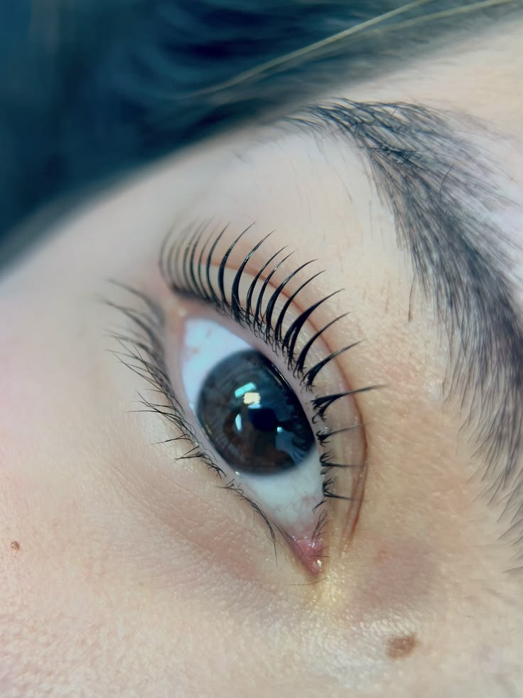

Caso real · Lifting coreano · Granollers
Lifting de pestañas en Granollers: coreano, Lash Lift y tinte
Realza la curva de tus pestañas naturales, sin añadir fibras.
Sin tinte: 45 € · 45 min aprox.
Con tinte vegano: 55 € · 1 h aprox.

Caso propio y autorizado
Resultado real de lifting coreano con tinte.

Qué observamos antes
- Longitud y dirección de crecimiento.
- Estado y resistencia de la pestaña.
- Tratamientos recientes o extensiones.
- Efecto deseado: natural o más definido.
Cada pestaña responde de forma diferente. La fotografía muestra un caso real y no garantiza un resultado idéntico.
Experiencia compartida en Google. Me hice el lifting de pestañas + tinte. Me ha encantado
— Alba Castelló. Leer la reseña original de lifting. Fuente consultada el ; es una opinión individual, no acredita el caso fotografiado ni garantiza un resultado.
Una curva adaptada a tu mirada
La longitud, la dirección y el estado de tus pestañas guían el diseño. Nohuska utiliza un único protocolo coreano, con hidratación durante el tratamiento; el tinte es una elección, no una obligación. Lash Lift es el nombre inglés del lifting, no otra técnica de la carta.
Lifting con o sin tinte: elige el acabado
| Opción | Qué incluye | Cita aproximada | Precio |
|---|---|---|---|
| Lifting coreano sin tinte | Valoración, diseño de la curvatura e hidratación durante el tratamiento. Conserva el color natural de tus pestañas. | 45 minutos | 45 € |
| Lifting coreano con tinte vegano | El mismo protocolo, más color temporal para definir también las puntas claras. | 1 hora | 55 € |
El tinte ya está incluido en los 55 €: no se añade un suplemento. Si no sabes qué elegir, pide una valoración gratuita antes de reservar.
Antes de venir
Prepara tus pestañas para la valoración.
- Acude sin máscara ni maquillaje de ojos.
- Indica si llevas extensiones o quedan restos de adhesivo.
- Comenta cuándo te hiciste el último lifting o tinte.
- Informa de sensibilidad, irritación o molestias antes de la cita.
Si hay molestias o la pestaña necesita recuperarse, puede convenir aplazar el servicio. Una foto permite orientarte, pero la adecuación se confirma en la valoración.
Después del lifting
Antes de irte, confirma cuándo puedes mojar las pestañas, retomar la máscara y utilizar tus productos de limpieza. Sigue las pautas de esta cita, no las de un tratamiento anterior.
Consulta cómo evoluciona la curvatura antes de programar otro lifting. El crecimiento y el estado de la pestaña determinan cuándo repetir, sin un intervalo idéntico para todas.
Consultar mi casoServicio local · cita previa
Lifting de pestañas cerca de ti en Granollers.
El servicio se realiza en Nohuska Beauty Lab, Avinguda Sant Esteve, 40, 08402 Granollers. Si vienes de Canovelles, Les Franqueses, La Roca, Cardedeu, La Garriga u otra localidad del Vallès Oriental, confirma la cita antes de desplazarte.
Puedes solicitar una valoración gratuita por WhatsApp o llamar al 624 011 715.

Valoración personalizada en Nohuska
Valentina revisa la mirada y el estado de la pestaña antes de recomendar la modalidad de lifting que encaja contigo.
Preguntas frecuentes sobre lifting de pestañas
¿Qué incluye el lifting coreano de pestañas en Nohuska?
Incluye valoración de la pestaña natural, diseño de la curvatura e hidratación durante el tratamiento. Nohuska utiliza el mismo protocolo coreano con y sin tinte; el tinte vegano se incluye solo en la modalidad de 55 €. Lash Lift es el nombre inglés del lifting, no otro servicio.
¿Qué diferencia hay entre lifting y extensiones de pestañas?
El lifting eleva y curva tu propia pestaña sin añadir fibras. El pelo a pelo y el volumen añaden fibras y requieren valorar limpieza, mantenimiento o retirada según su conservación. Click Lash es otra colocación profesional, con duración orientativa propia; no se le aplica automáticamente el calendario de relleno del pelo a pelo.
¿Qué desventajas tiene el lifting de pestañas?
El lifting no añade fibras ni crea longitud o densidad nuevas: realza la pestaña que ya tienes. El resultado es temporal y cambia con su renovación y tus cuidados. Si llevas extensiones, te has hecho otro tratamiento recientemente o notas sensibilidad o molestias, coméntalo en la valoración; puede convenir aplazar la cita. Revisamos la pestaña antes de confirmar si admite el lifting y el tinte.
¿Cuánto dura la cita de lifting coreano?
La cita dura unos 45 minutos sin tinte o aproximadamente 1 hora con tinte vegano. Ambas opciones utilizan el mismo protocolo coreano. Este tiempo se refiere a la sesión, no a la duración del resultado.
¿Cuánto dura el resultado del lifting?
Según la experiencia de Nohuska, el resultado del lifting coreano suele mantenerse unas 5–6 semanas. Es una orientación, no una garantía: depende del ciclo natural de cada pestaña, los hábitos y los cuidados. No debe confundirse con la cita: unos 45 minutos sin tinte o aproximadamente 1 hora con tinte. Antes de repetir el tratamiento, Nohuska valora el estado de la pestaña; no se fija una nueva sesión automáticamente al cumplir ese plazo.
¿Puedo maquillar las pestañas después?
Te indicaremos cuándo retomar maquillaje, agua y productos habituales según el protocolo realizado. Sigue esas pautas para no alterar el resultado inicial.
¿Cómo debo acudir a la cita?
Acude sin maquillaje de ojos y comunica si llevas extensiones, has realizado otro tratamiento recientemente o tienes sensibilidad o molestias en la zona.
¿Qué es Nohuska Korean Gaze?
Es el protocolo de mirada que combina Nohuska Natural Brow, lifting coreano y tinte vegano de pestañas, después de valorar cejas y pestañas.
¿Cuánto cuesta el lifting de pestañas con tinte?
El lifting coreano con tinte vegano cuesta 55 €; sin tinte, 45 €. Elige la modalidad al solicitar cita o pide una valoración gratuita si necesitas orientación. Korean Gaze añade Natural Brow al lifting con tinte por 85 €, frente a 110 € por separado.
¿Dónde se realiza el lifting de pestañas?
En Nohuska Beauty Lab, Avinguda Sant Esteve, 40, 08402 Granollers, con cita previa. Consulta disponibilidad antes de desplazarte.
¿También quieres trabajar las cejas?
Korean Gaze™ reúne Natural Brow™: diseño, laminado y tinte de cejas y lifting coreano con tinte vegano por 85 €, en unos 90 minutos; ambos servicios por separado cuestan 110 €. El pack no implica que el resultado dure más.
Si solo buscas color, tienes tinte de pestañas por 10 €. Para añadir fibras, compara pelo a pelo o volumen por 55 €, o Click Lash™ por 35 €.
Una consulta por WhatsApp no confirma una reserva. Acordaremos contigo el tratamiento, la fecha y la hora.
Consulta tu próxima cita de lifting.
¿Lo tienes claro? Solicita cita. Si necesitas ayuda para elegir, pide una valoración gratuita.